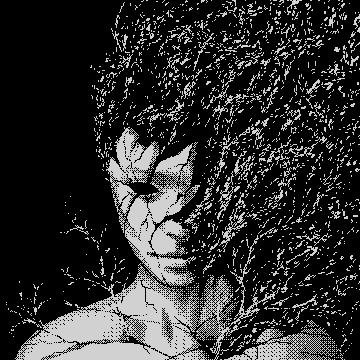

سلام، من مهدینئوکس هستم 👋
برنامهنویس وب تازهکار که عاشق ساختن چیزهای ساده و کاربردیه. با HTML، CSS و JavaScript پروژه میسازم و هر روز یه چیز جدید یاد میگیرم.

برنامهنویس وب تازهکار که عاشق ساختن چیزهای ساده و کاربردیه. با HTML، CSS و JavaScript پروژه میسازم و هر روز یه چیز جدید یاد میگیرم.